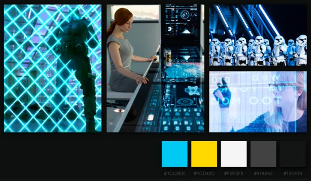

使用者研究
介面設計
網頁設計
UI/UX、數名網頁工程師
2週
UI/UX
使用者研究、介面設計、易用性測試。
由六角學院主辦的第三屆前端時光屋網頁設計比賽，由UI設計師和工程師共同協作完成專案。
運用交通部提供的API，完成網頁版的公車即時動態查詢。
比賽中參賽者共1854人，我的設計成功讓 2位 工程師入圍，和1位工程師獲得第一名
整體視覺以未來科技感為主，光暈感的元件凸顯科幻的感覺
透過競賽，和許多工程師討論、溝通，在討論過程中，獲得不少前端技術的相關知識，受益良多，透過與工程師溝通，讓我有機會了解自己的設計是否合理且可施行。也是第一次將所學的使用者研究成功運用到實作專案上，此次的競賽讓我獲益良多，也更加肯定自己的UI/UX能力。
*防剽竊/盜用專案，一般瀏覽者僅開放部分詳情，若業主對專案有興趣，可與我聯繫。